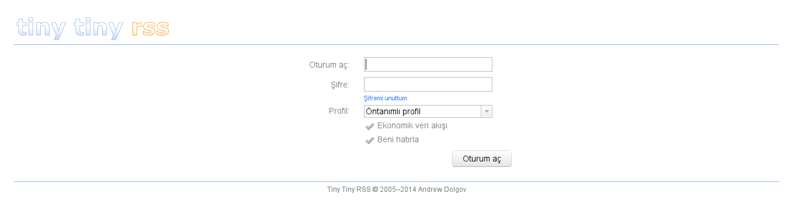

RSS, senelerdir var olan bir teknoloji. Birden fazla kaynağı takip etmek için var olanlar arasında muhtemelen en güzeli de. Özellikle mobil tarafın hayatımıza çekirge sürüsü gibi giren akıllı telefonlarla baskın hâle gelmesiyle beraber, RSS kullanımı daha da kolaylaştı. Zira elimizin altında aklımıza geldiği anda “Neler yazmış bakalım takip ettiğim yerler?” sorusuna cevap alabileceğimiz bir bilgisayar mevcut.
RSS ile tanıştığımda büyük çoğunluğun yaptığı gibi bu işi Google Reader’a yıkmıştım. Seneler boyunca da kendisini memnuniyetle kullandım. Akıllı bir telefona sahip olduğumda da kendisiyle devam ettim, ta ki geçen seneye kadar. Bildiğimiz üzere Google bu hizmetini geçen sene sonlandırdı. Birçokları gibi ben de anlam veremedim ancak Google’ın işine bazen akıl sır ermeyebiliyor. Bir süre boşluğa düşüp birkaç uygulama denedikten sonra yine büyük çoğunluğun geçiş yaptığını tahmin ettiğim gibi Feedly uygulamasına geçmiştim, tabi telefon üzerinde. Fakat, kendisine bir türlü alışmak kısmet olmadı. Nedense sürekli eski, bildiğim, aşina olduğum RSS arayüzünü arıyordum.
Bir süre önce Tiny Tiny RSS (tt-rss) ile tanıştım (aslında uzunca bir süredir mevcut olan bir uygulama) ve memnuniyetle kullanmaktayım. Memnun kaldığımdan ötürü de kullanmak isteyenler çıkabilir diyerek kendisini tanıtmak istedim. Yazının başı sayılabilecek bu noktada bir uyarı geçelim, iki tıkla halledilebilecek bir uygulama değil tt-rss. Geliştiricisi gereksinimlerini sıralarken sanal veya gerçek bir sunucudan bahsetmekte. Gerçi sunucu üzerinde yapılanları eğer paylaşımlı barındırma hizmeti aldığınız yerde de yapabiliyorsanız sorun olmayacaktır diye düşünüyorum. Kısacası kendisi sunucu tabanlı çalışan bir uygulama. Gereksinimleri yazalım:
- Bir sunucu (veya aynı işlemlerin yapılabileceği paylaşımlı bir hesap)
- PHP 5.3 ve üzeri
- PostgreSQL veya MySQL (InnoDB olmalı, MyISAM ile çalışmıyor)
- Eh tabi, PHP’nin de yorumlanabilmesi için sunucu üzerinde çalışan bir web sunucusu
- İstemci tarafı için bir tarayıcı veya telefon üzerinde uygulama
Günümüzde sunucu sahibi olan insan sayısı bir hayli arttı zira özellikle yurtdışı kaynaklı şirketler hem güzel hem de ucuz sunucu sağlıyorlar artık. Ayrıca paylaşımlı barındırma hizmeti veren yerler de imkânları genişletti. Eğer bu ikisine de sahip değilseniz bu yazı size hitap etmiyor olabilir, fakat etrafınızda tt-rss kullanan veya kullanacak arkadaşlarınız varsa onlardan bir hesap rica edebilirsiniz. Evet bu mümkün ve kendisine yazının ilerleyen bölümlerinde değinilecek.
tt-rss’yi kullanmak için iki nedeniniz olabilir:
- Benim durumumda olduğu gibi bir türlü doğru uygulamayı hâlâ bulamamış olmanız.
- Verilerinizi ilk defa ya da artık bundan sonra başka birilerinin eline vermek istemiyor olmanız.
Kurulum
tt-rss için gereksinimleri de aktarırken sunucuda nelerin kurulu olması gerektiğinden bahsettik. Bu nedenle kendi sunucunuz olsun veya olmasın belirtilen bileşenlerin sağlanmış olması gerekmekte. Kendisi bir de veritabanı kullandığı için kurulumdan önce onun da oluşturulması gerekiyor. Bunların sağlandığını varsayarak tt-rss’nin kurulumunu anlatmaya geçelim. Hemen belirteyim, bu anlatımı yeni kurulmuş bir Ubuntu 14.04 üzerinde, LEMP (yani Nginx,Php,Mysql) üçlüsü ile deneyerek yapmaktayım.
Uygulamanın son sürümüne şu adresten ulaşıyoruz:
https://github.com/gothfox/Tiny-Tiny-RSS/archive/1.13.tar.gz
Eğer sunucuda git kurulu ise şu bağlantıdan da en güncel sürüme erişebiliriz:
https://github.com/gothfox/Tiny-Tiny-RSS.git
Ben bu anlatımda git üzerinden edinip kurulumu gerçekleştireceğim.
git clone https://github.com/gothfox/Tiny-Tiny-RSS.git
Komutu verdiğiniz dizinde Tiny-Tiny-RSS ismindeki dizine inecektir uygulama. Esasında kurulum çok kolay. Fakat kurulumun yapılacağı dizin biraz çetrefilli olacak. tt-rss kendisini (rss beslemelerini değil) güncellemesi esnasında mevcut dizinin ismini değiştirip yeni bir dizin üzerinden sürüm yükselttiği için hem kendi dizininde hem de bir üstteki dizinde yazma hakkı arıyor. Ayrıca, hem kendisini hem de beslemeleri güncelleme işini root kullanıcı veya yetkiye bürünmüş kullanıcı ile yapmamızı istemiyor. Bu nedenden ötürü kendi sunucusu üzerinde işlem yapanlar yetkisiz bir kullanıcıya bu işi yaptırmalılar ya da daha doğrusu root haricindeki yetkili kullanıcıları olsa bile sudo kullanmamalılar. İşte bu mecburiyet nedeniyle kurulum şu şekilde yapılabilir: htp://alan-adı/birinci_dizin/ikinci_dizin. Örneğin: http://alan-adı/rss/tt-rss
Buradaki önemli konu mevcut rss ve tt-rss dizinlerinin biraz önce bahsetmiş olduğumuz yetkisiz kullanıcı tarafından yazılabiliyor olmasıdır. Şimdi, örnekte verdiğimiz benzer yapıyı oluşturup kuruluma devam edelim.
mkdir rss
mv Tiny-Tiny-RSS tt-rss
mv tt-rss rss
chown -R www-data:ubuntu rss
chmod -R 775 rss
Son iki komut az evvel bahsini etmiş olduğumuz kısıtlama nedeniyle uygulanıyor. Dikkat ederseniz dizinlerin sahipliğini www-data kullanıcısına, grup üyeliğini ise ubuntu kullanıcısına verdik. Yazma hakkını da 775 olarak ayarladık ki hem sahibi hem de grup üyeleri yazabilsin ilgili dizinlere. Tabi şurası açıktır ki sistemde ubuntu isminde bir kullanıcı olmalıdır. Bu işlemlerin ardından web tarayıcımızdan şu adrese gitmek kurulumu başlatmak için yeterli:
http://alan-adı/rss/tt-rss
Karşımıza şöyle bir ekran çıkıyor:

Buradaki ilgili alanları kendi yapılandırmamıza göre doldurmamız gerekiyor. Görülebileceği üzere çok basit bir kurulum söz konusu. Sayfanın en altındaki “Test configuration” bağlantısına tıkladığımızda yapılandırmamızı denetleyip bize sorun olup olmadığını söylüyor uygulama. Temiz bir LAMP veya LEMP kurulumundan sonra mızmızlanabileceği tek konu PHP’nin curl desteği olacaktır. Bunu da sağlamak için şu paket kurulabilir:
apt-get install php5-curl
service nginx restart
Tekrar yapılandırmayı denetlediğimizde artık bize “Configuration check succeeded.” demesi gerekmekte. Bu aşamdan sonra önemli olan husus veritabanının ilklendirilmesi. Onun için de en alttaki “Initialize database” bağlantısını tıklamamız yeterli. Bu aşamada uygulama veritabanını ilklendirip gerekli verileri basacaktır. Hemen sonrasında bize ana dizine (tt-rss dizini) yerleştirmemiz için bir dosya üretecektir. Bu dosya, uygulamanın yapılandırma dosyası olup eğer varsa ihtiyaçlarımız, bakıp düzenlememizi gerektirir. Bu aşamanın ekran görüntüsü şu şekilde:

Dosyayı veya içinde yazanları kopyalayıp istediğimiz bir şekilde ana dizine kopyalayabileceğimiz gibi, uygulamanın bunu bizim yerimize yapmasını da sağlayabiliriz. En alttaki “Save configuration” bağlantısını takip ettiğimizde eğer dizine yazma hakkı varsa bizim yerimize uygulama bunu yapacaktır (www-data kullanıcısının yazabiliyor olması gerekmekte). Her şey yolunda gittiyse şu iletiyi alacağız: “Successfully saved config.php. You can try loading tt-rss now.”
Burada “loading tt-rss now” bağlantısını takip ettiğimizde ya da elle http://alan-adı/rss/tt-rss bağlantısına gittiğimizde artık uygulamanın kurulmuş ve bizi şu ekranla karşılıyor olması gerekmekte:

Yapılandırma
Varsayılan yetkili kullanıcı adı: admin
Varsayılan parola: password
Yukarıdaki bilgileri kullanarak giriş yapıp ilk olarak yetkili kullanıcı parolasını değiştirmeniz önerilir. Gördüğünüz üzere uygulama yüksek oranda Türkçe desteği ile geliyor. Parolayı değiştirmek için sağ üstten “Daha fazla -> Tercihler -> Kullanıcılar” sekmesine gidip, admin kullanıcısının üzerine bir kere tıklamanız gerekmekte. Daha sonra açılacak ekranda parola ataması yapabilirsiniz:
Yeni parola atadıktan sonra size bir hata döndürecektir. Bu ufak bir böcek gibi algılanabilir, yeni parola atamasından sonra uygulama arayüze ulaşamamakta ve sizden yeniden giriş yapmanızı beklemekte.
Yeniden giriş yaptıktan sonra artık uygulamayı dilediğiniz gibi yapılandırabilirsiniz. Tahmin edebileceğiniz gibi ayarların tamamı “Daha fazla -> Tercihler” bölümünden yapılıyor. Bu bölümün neredeyse tamamı Türkçe ve açıklamlar da yeterli olduğu için fazlaca ayrıntıya girmeyelim. Beslemelerinizi “Daha fazla -> Özet akışına üye ol” bağlantısından ekleyebilirsiniz. Beslemelerinizi ve ait oldukları kategorileri (düzenleyip, eklemek) “Özet akışları” sekmesinden yönetebilirsiniz.
tt-rss’nin güzel bir özelliği de birden fazla kullanıcıya (dilediğiniz kadar) imkân tanıyor olması. Zaten sunucu temelli çalışan bir uygulama bunu yapamasaydı anlamı olmazdı. Yazının bir yerinde değindiğimiz gibi, arkadaşlarınız veya aileniz için ayrı ayrı hesaplar açıp onların da sizin uygulamanız üzerinden hizmet almasını sağlayabilirsiniz. Bunu da Tercihler bölümündeki Kullanıcılar sekmesinden yönetebilirsiniz (açık olduğu üzere).
Güncelleme
Bu bölüm hem uygulamanın kendisini hem de beslemelerin güncellemesini içerecek. Öncelikle beslemelerin güncellemesinden bahsedelim.
tt-rss beslemelerin güncellenmesinin update.php veya update_daemon2.php üzerinden yapılmasını önermekte. İlk dosya tekil, ikincisi ise çoklu süreçler şeklinde güncelleme yapıyor. Herhangi birini kullanabilirsiniz, ben ilki ile devam edeceğim anlatıma. Kabaca şöyle oluyor bu işlem, öncesinde eğer kurulu değilse php-cli paketini sisteme kurmamız gerekiyor.
apt-get install php-cli
Sonrasında ise elle php-clinin sağladığı php ile elle güncelleyerek ya da bunu cron görevi olarak ekleyerek beslemeler güncellenebiliyor. Eğer bu işlem root kullanıcısı ile veya yetkili bir şekilde (sudo) ile yapılırsa uygulama şunu söylüyor: “Please don’t run this script as root.”
Tabi, bu güncelleme işini sürekli elle yapmanın hiçbir anlamı yok. Bu nedenle bu işlemi sunucu üzerindeki Cron’a yıkmamız gerekmekte. Bu aşamada sistemde mevcut bulunan ubuntu kullanıcısı için bu cron görevini tanımlamalıyız. İlgili kullanıcıya geçerek cron aşamalarını gerçekleştirebiliriz.
su ubuntu
crontab -e
Eklenecek satır her saat başı güncelleme için şu şekilde olabilir:
0 * * * * /usr/bin/php /var/www/alan-adı/rss/tt-rss/update.php --feeds --quiet
Buradaki /var/www/alan-adı yolu tamamen sizin barındırma ayarlamalarınızla alakalıdır. cron öncesinde süreç doğru işliyor mu işlemiyor mu diye denemenizi öneririm. Yetkili olmayan kullanıcıda işlemin başarıyla sonuçlanması gerekiyor.
/usr/bin/php /var/www/alan-adı/rss/tt-rss/update.php --feeds
Eğer her şey yolundaysa beslemelerin güncellendiğini ilgili çıktılardan görebilirsiniz.
Bunun haricinde sunucudan değil de bilgisayar üzerinden yapılan bir güncelleme yöntemi de mevcut. O da tarayıcınızdan rss adresinize gitmek. Her seferinde uygulama beslemeleri güncelleyecektir. Bunun için de config.php dosyanızdaki SIMPLE_UPDATE_MODE değişkeninin tanımlı olması gerekiyor. Fakat, bu şekilde kullanımın hiçbir rahatlığı olmadığı için tercih edileceğini sanmıyorum. Ayrıca, tarayıcının kesinlikle bilgisayar üzerinden kullanılması gerekiyor zira bu özellik sadece bu arayüzde desteklenmekte. Telefonlarda kullanılamıyor yani.
Beslemelerin güncellenmesi tamam, ola ki uygulamayı güncellemek istediğimizde ne yapacağız? İki yöntem mevcut: 1. Arayüz üzerinden, 2. Elle.
Arayüz üzerinden yapabilmek için git sürümünü kullanıyor olmanız ve “updater” eklentisinin config.php dosyasında tanımlı olması gerekiyor ki varsayılan olarak tanımlı geliyor. Güncelleme için “Daha fazla -> Tercihler” yolunu takip ettiğinizde sayfanın en altında “Tiny Tiny RSS’i güncelle” bağlantısını görebilir ve güncellemeleri denetleyebilirsiniz.
İkinci yöntem ise elle uçbirimden şu şekilde gerçekleştirilebilir:
php update.php --update_self
Size yeni sürüm mevcutsa eskisinin yedeklenerek başka bir isim verileceği, yeni sürümün tt-rss olarak indirileceği söyleniyor. Eğer tema özelleştirmeleriniz veya yeki isteyen besleme kaynaklarınız varsa bunları eski dizinden taşımanız gerekmekte. Uygulama bu yetki anahtarlarını FEED_CRYPT_KEY değişkeninde saklamakta. Yine belirtelim, bu işlemin de yetkisiz bir şekilde yapılması gerekiyor.
RSS Takibi
RSS takibi için dilediğiniz yolları kullanmanız mümkün. Tarayıcınızdan ilgili adresinize giderek takibi yapabileceğiniz gibi, kullandığınız tarayıcılara (Firefox, Chrome) eklentilerini kurarak size kaç tane okunmamış yazınız olduğun da hatırlatabilirsiniz. Eğer akıllı bir telefona sahipseniz Android üzerinde iki farklı uygulama mevcut. Biri resmi olan (geliştiricinin yazdığı) diğeri ise gayr-ı resmi olan bir uygulama. Resmi olan ücretli ve yedi günlük bir deneme süresi veriyor. Resmi olmayan ise ücretsiz ve kıyasladığım kadarıyla bana yeterli göründü. News+ kullanan varsa onun için de eklentisi mevcut. Sırasıyla geçelim bağlantıları:\
https://play.google.com/store/apps/details?id=org.fox.ttrss
https://play.google.com/store/apps/details?id=org.ttrssreader
https://play.google.com/store/apps/details?id=com.noinnion.android.newsplus.extension.ttrss \
IOS tarafı ise şuradan bakabilirler ilgili uygulamaya fakat akıbeti hakkında bilgim yok maalesef :)
https://itunes.apple.com/us/app/tiny-reader-rss/id689519762?mt=8
Sonuç
tt-rss’nin kurulumu ve yapılandırması biraz zahmetli gibi görünse de sonucunda alınan keyif buna değmekte. Zira hem kendinize ait basit ve hızlı bir RSS sunucu uygulamanız olmakta, hem de etrafınızdaki başkalarına da faydanız dokunmakta. Eğer eski, sade ve kullanışlı uygulamalara özlem duyuyor ya da verilerinizi kendiniz tutmak istiyorsanız tt-rss’yi kesinlikle denemelisiniz. Elinizin altında küçük de olsa bir sunucunuz varsa kurup kullanmak çok da zor değil.
İyi takipler!